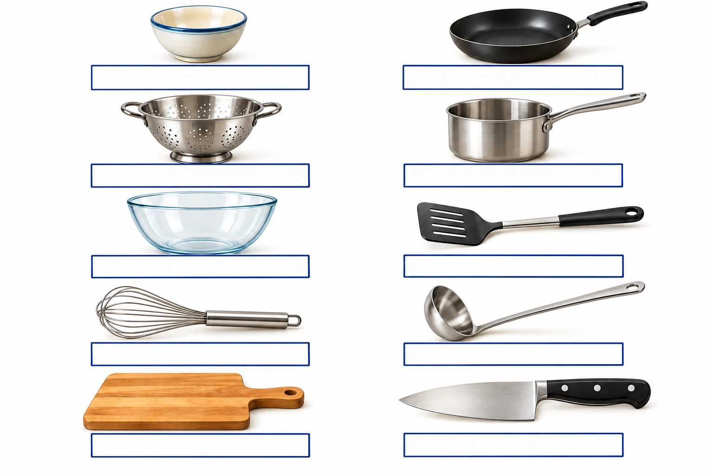

🌍 LEARN & PLAY · #KhuongDo
French Games
Apprendre le français en s’amusant
← Home / Accueil
Jeu #01 · La cuisine équipée
14 questions
Jouer →

Jeu #02 · Les accessoires de cuisine
10 questions
Jouer →
Jeu #03 · Au supermarché
15 questions
Jouer →